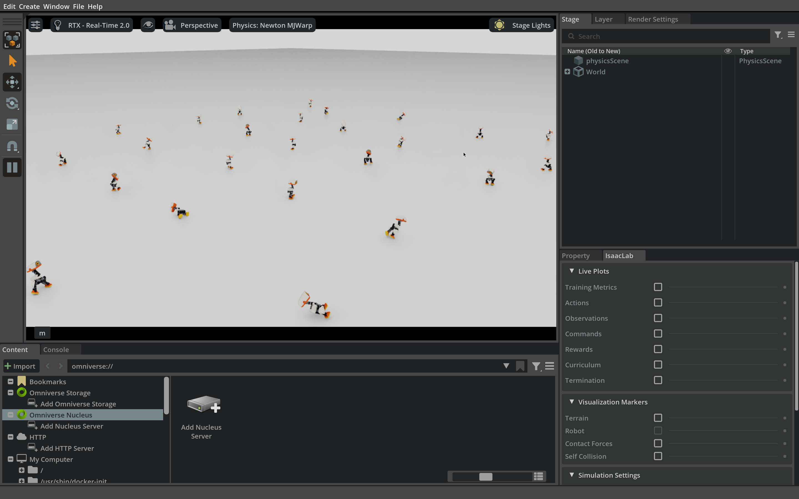
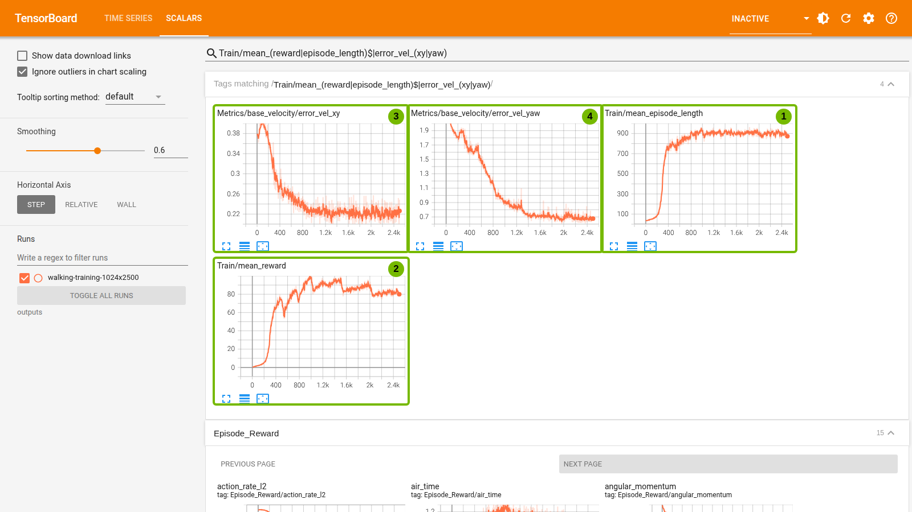
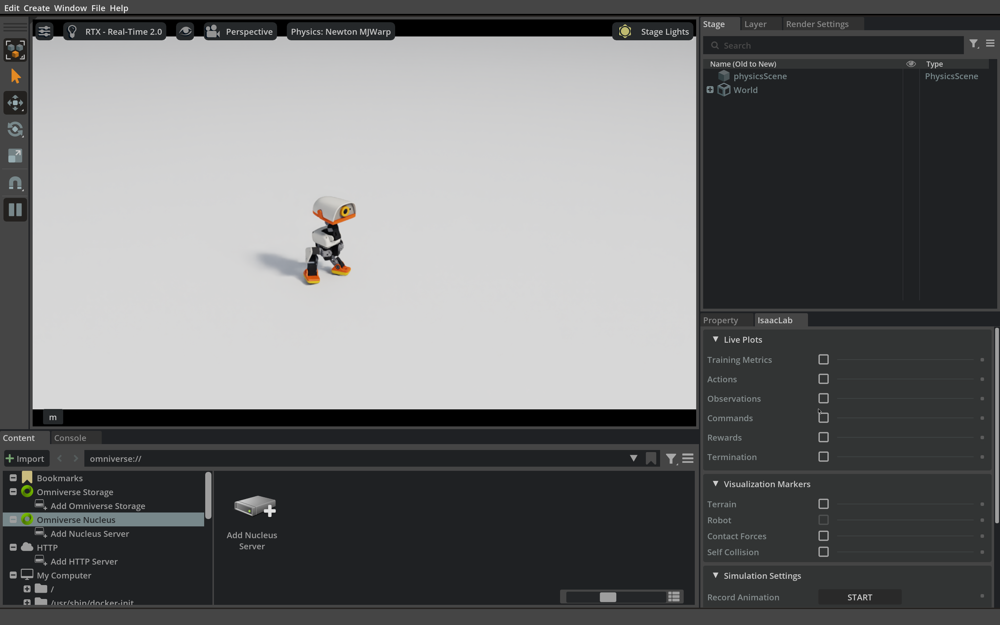

3.2 Domain randomization: train and test a walking policy#
Understand why domain randomization helps a policy cope with real-world differences, then start a walking training in Isaac Lab, watch the parallel environments and test a trained policy.
Why domain randomization#
The reinforcement learning of Section 3.1 happens entirely in simulation, where every parameter is one exact number: foot friction, trunk mass, joint friction, the delay before a servo starts moving… Real Microducks differ: servos from different batches have different friction, battery charge changes servo output, encoder zeros are slightly off, and floors are harder or softer. A policy that practises only with one “perfect” set of parameters can learn to rely on its details and lose balance on another robot or another floor. This gap between simulation and reality is often called the sim-to-real gap.
Domain randomization takes a direct approach: since we do not know the exact real parameters, each parallel environment draws its own set of parameters during training. The policy faces a thousand “slightly different robots” at once and earns a high return overall only if its actions work across those differences.
Variable meanings
- \(J(\theta)\)
- Learning objective under domain randomization: the expected discounted return averaged over many sets of random physical parameters.
- \(\theta\)
- Parameters (weights) of the policy network, updated during training.
- \(\mathbb E_{\xi\sim p(\xi)}\)
- Average over randomly drawn sets of physical parameters.
- \(\mathbb E_{\tau\sim\pi_\theta,\,\xi}\)
- Average over trajectories sampled with the current policy in a simulation with parameters \(\xi\).
- \(t\)
- Index of a control step.
- \(T\)
- Number of control steps counted in an episode's return.
- \(\gamma\)
- Discount factor; 0.99 in the course training.
- \(r_t\)
- Immediate reward of the current control step.
Compared with the objective in Section 3.1 there is one more average: first draw a set of physical parameters \(\htmlData{sym=xi}{\xi}\) from the distribution \(\htmlData{sym=p_xi}{p(\xi)}\), then sample trajectories with the policy \(\htmlData{sym=pi_theta}{\pi_\theta}\) under those parameters and compute the discounted return. PPO updates the same way; what changes is the data, because one batch mixes many physical conditions.
Choosing ranges is a trade-off. Too narrow, and the policy still fits only a few cases; too wide, and the task can become too hard, so the policy learns cautious, sluggish motion or nothing at all. Ranges are best grounded in measurements or hardware specifications, such as measured servo delays or the battery's operating voltage. Domain randomization improves robustness but does not replace testing on the robot: it covers only the differences you thought of and wrote into the configuration.
What the course training actually varies#
Isaac Lab implements randomization with its event manager. Each event has a trigger: startup samples once when the environment is created and then keeps the value; reset samples again whenever that environment resets; interval fires at time intervals during an episode. The table comes from the env.yaml saved by the full training; these are the values that were in effect.
Randomized item |
Range |
Trigger |
Real-world difference it imitates |
|---|---|---|---|
Static and dynamic foot friction |
0.7–1.3 |
startup |
Different floors and sole materials |
Encoder zero offset |
±0.015 rad |
startup |
Assembly and calibration error |
Trunk mass |
nominal × 0.95–1.05 |
startup |
Battery, cable and shell differences |
Trunk and head centre of mass |
±3 mm per axis |
reset |
Uneven mass distribution |
Joint friction |
nominal × 0.9–1.1 |
reset |
Servo variation and wear |
Joint armature |
nominal × 0.9–1.1 |
reset |
Gear and motor differences |
External push |
every 3–6 s, horizontal velocity change up to ±0.3 m/s |
interval |
Bumps, being pushed |
Servo delay |
3–6 physics steps (15–30 ms) |
actuator model |
Communication and control delay |
Servo supply voltage |
6.5–8.2 V, plus load-dependent voltage drop |
actuator model |
Battery charge |
Observation noise |
on |
every step |
Sensor noise |
Start position and heading |
±0.5 m, any heading |
reset |
Walking off from different places |
1Foot friction is sampled when environments are created
mode="startup" draws once per environment. Static and dynamic friction lie in 0.7–1.3; num_buckets splits the range into 64 levels so thousands of environments share a few materials.
foot_friction = EventTerm(
func=mdp.randomize_rigid_body_material,
mode="startup",
params={
"asset_cfg": SceneEntityCfg("robot", body_names=MICRODUCK_FOOT_BODY_NAMES),
"static_friction_range": (0.7, 1.3),
"dynamic_friction_range": (0.7, 1.3),
"restitution_range": (0.0, 0.0),
"num_buckets": 64,
},
)2Encoder zero offset
Each joint reading gets a fixed offset within ±0.015 rad, imitating assembly and calibration error; the joint angles the policy sees differ slightly from the true ones.
encoder_bias = EventTerm(func=mdp.randomize_encoder_bias, mode="startup", params={"bias_range": (-0.015, 0.015)})3New joint friction at every reset
mode="reset" gives an environment a new friction set every time it restarts, so even one environment experiences different servo behaviour during training.
randomize_joint_friction = EventTerm(
func=mdp.randomize_bam_friction, mode="reset", params={"scale_range": (0.9, 1.1)}
)4A random push while walking
The interval event changes the body's horizontal velocity by up to 0.3 m/s every 3–6 seconds; the policy has to learn to recover its balance.
push_robot = EventTerm(
func=mdp.push_by_setting_velocity,
mode="interval",
interval_range_s=(3.0, 6.0),
params={"velocity_range": {"x": (-0.3, 0.3), "y": (-0.3, 0.3)}},
)The excerpt comes from the Microduck task configuration of the pinned Isaac Lab. Note that the tests and demonstrations in this section turn pushes and parameter randomization off to compare policies under nominal conditions; randomization is used only in training.
Start a full training and watch it in parallel#
Run the command below in the course container shell from Section 1.2 (to reopen it, see Section 1.2). It trains from a random initialization and reads no weights from any existing model; --show opens the Isaac Sim window so you see a thousand ducks practising at once, each in its own randomized environment. Use a new folder for --output.
python3 scripts/run.py train-walk \
--num-envs 1024 \
--iterations 2500 \
--show \
--output outputs/walking-training-01
Argument |
Meaning |
|---|---|
|
Environments running on the GPU at the same time; each has its own random parameters |
|
PPO sampling-and-update loops; Section 3.1 computed the matching sample count |
|
Opens Isaac Sim to display the parallel environments; rendering uses GPU memory and slows every iteration |
|
Where checkpoints, configuration, TensorBoard logs and the exported model are saved |
Key code parameters
Start point. Training starts from a random initialization and reads no existing model.
Scene and task. The robot model is
lab/assets/microduck_contact.usda(the full-body collision model); the task, rewards and randomization come from the runtime code arranged into/workspace/statewhen the container starts.Output. Checkpoints (one every 250 iterations),
env.yamlandagent.yaml, TensorBoard logs and the exported model go tooutputs/walking-training-01, under the host repository'soutputs/.
How long does a full training take? The course's pretrained result was trained on a DGX Spark without a window: 1024 environments × 2500 iterations, a training phase of 7246 seconds (about 2 hours), roughly 4.8 minutes per 100 iterations, with other jobs on the GPU at the time. That run used the original official collision model, while the command above uses the full-body collision model, and --show adds rendering on top, so your time will differ.
You do not need to wait for it to finish. Once the window appears and the terminal prints reward and episode length for each iteration, watch for a few minutes: in the first tens of iterations most ducks fall quickly and are reset one by one, and as iterations go by more and more stay up.
When you have seen enough, press Ctrl+C; the container keeps running. Checkpoints already saved (one every 250 iterations) remain, but exported/policy.onnx is exported only when training finishes. The test below uses the course's pretrained policy by default; to let your own training finish, you can drop --show to speed it up, then select your own model explicitly.


The training window opened by --show, from a real training run; it only shows what training looks like at the start. Your command uses 1024 environments, so the window shows more, denser ducks.
Training time and how to judge the result#
The course repository includes the checkpoint, exported model, configuration and TensorBoard log of this full training (datasets/walking-ppo about 12 MB). The TensorBoard curves below use that log; the green numbers match the explanations that follow.


Real TensorBoard record of the full training (1024 environments × 2500 iterations). The curves use TensorBoard's default 0.6 smoothing; the faint lines are the raw values.
Read them by number:
Mean episode length rises from about 23 to about 870 steps (an episode lasts at most 1000 steps, 20 seconds): the robot goes from falling almost immediately to staying up for most of the episode. This is the first sign that balance has been learned.
Mean episode reward rises quickly over the first 800 iterations and then fluctuates around 80 without clear further gains. A plateau does not mean the skill is perfect, only that more training with the same settings helps less.
Linear-velocity tracking error falls from about 0.38 to about 0.22 m/s: forward and sideways tracking improves, but the error is still sizeable.
Yaw-rate error falls from about 1.9 to about 0.7 rad/s and stays large: a warning that turning may not have been learned and needs its own test.
1024 environments · 2500-iteration training
Training phase 7246 sMean episode length / control steps
Mean episode reward
Linear-velocity error / (m/s)
Yaw-rate error / (rad/s)
Hover, tap or Tab to a point to inspect its logged value.
View all values
| Iteration | Mean episode length / control steps | Mean episode reward | Linear-velocity error / (m/s) | Yaw-rate error / (rad/s) |
|---|---|---|---|---|
| 1 | 23.440001 | -0.219169 | 0.296328 | 2.134320 |
| 26 | 36.939999 | 0.834454 | 0.368759 | 2.071912 |
| 51 | 41.250000 | 1.208329 | 0.392139 | 2.128884 |
| 76 | 45.580002 | 1.682959 | 0.397378 | 2.041946 |
| 101 | 51.040001 | 2.250180 | 0.408329 | 1.925708 |
| 126 | 54.320000 | 2.619138 | 0.389241 | 1.912978 |
| 151 | 56.849998 | 2.796545 | 0.387191 | 1.876487 |
| 176 | 76.190002 | 4.462130 | 0.376219 | 1.783213 |
| 201 | 80.790001 | 4.991593 | 0.353692 | 1.801817 |
| 226 | 117.320000 | 7.739560 | 0.351915 | 1.854069 |
| 251 | 181.949997 | 12.569156 | 0.341812 | 1.874103 |
| 276 | 353.079987 | 26.182005 | 0.314410 | 1.845664 |
| 301 | 460.420013 | 34.746086 | 0.305359 | 1.779765 |
| 326 | 633.330017 | 49.909813 | 0.291059 | 1.718172 |
| 351 | 696.419983 | 56.202122 | 0.307182 | 1.802131 |
| 376 | 754.989990 | 64.339676 | 0.272190 | 1.729597 |
| 401 | 773.239990 | 67.565056 | 0.283203 | 1.686494 |
| 426 | 768.159973 | 68.789948 | 0.261093 | 1.616971 |
| 451 | 818.280029 | 75.147537 | 0.240884 | 1.610221 |
| 476 | 770.989990 | 72.111961 | 0.236048 | 1.589239 |
| 501 | 770.919983 | 72.456520 | 0.248633 | 1.612471 |
| 526 | 813.260010 | 65.547943 | 0.254595 | 1.582824 |
| 551 | 797.099976 | 62.051201 | 0.250154 | 1.538889 |
| 576 | 804.940002 | 66.383514 | 0.261218 | 1.612753 |
| 601 | 790.820007 | 68.136955 | 0.251279 | 1.428899 |
| 626 | 844.200012 | 75.018234 | 0.254835 | 1.376273 |
| 651 | 847.650024 | 78.205177 | 0.231264 | 1.353327 |
| 676 | 813.619995 | 76.515282 | 0.241998 | 1.321488 |
| 701 | 840.849976 | 81.612206 | 0.241934 | 1.280166 |
| 726 | 877.640015 | 86.034882 | 0.241766 | 1.277593 |
| 751 | 794.289978 | 77.302582 | 0.245614 | 1.210440 |
| 776 | 845.799988 | 72.368965 | 0.261666 | 1.276059 |
| 801 | 920.869995 | 77.073166 | 0.255478 | 1.186234 |
| 826 | 875.859985 | 79.491127 | 0.218354 | 1.149005 |
| 851 | 869.409973 | 83.822792 | 0.220636 | 1.023570 |
| 876 | 908.989990 | 90.145164 | 0.220738 | 1.033395 |
| 901 | 927.849976 | 94.222145 | 0.228762 | 0.992312 |
| 926 | 870.760010 | 89.449356 | 0.230090 | 1.024745 |
| 951 | 917.150024 | 95.574738 | 0.234184 | 0.917278 |
| 976 | 943.099976 | 98.540092 | 0.230631 | 0.928747 |
| 1001 | 904.760010 | 96.524216 | 0.230447 | 0.853239 |
| 1026 | 867.619995 | 85.006287 | 0.230803 | 0.873834 |
| 1051 | 882.609985 | 82.460548 | 0.228324 | 0.927592 |
| 1076 | 922.330017 | 88.506538 | 0.229111 | 0.898267 |
| 1101 | 908.580017 | 87.517242 | 0.227703 | 0.844541 |
| 1126 | 910.599976 | 89.982849 | 0.212737 | 0.851447 |
| 1151 | 897.890015 | 89.966110 | 0.241738 | 0.863227 |
| 1176 | 917.799988 | 91.553345 | 0.213714 | 0.812583 |
| 1201 | 871.950012 | 88.917900 | 0.227080 | 0.874969 |
| 1226 | 902.880005 | 90.894066 | 0.229992 | 0.830446 |
| 1251 | 904.599976 | 91.784737 | 0.217479 | 0.810227 |
| 1276 | 950.530029 | 94.889755 | 0.231273 | 0.835746 |
| 1301 | 947.640015 | 93.335953 | 0.205099 | 0.770796 |
| 1326 | 864.830017 | 87.697136 | 0.224979 | 0.793762 |
| 1351 | 890.979980 | 92.782623 | 0.212694 | 0.730188 |
| 1376 | 925.760010 | 94.602196 | 0.222149 | 0.719558 |
| 1401 | 937.309998 | 96.975327 | 0.224122 | 0.750158 |
| 1426 | 877.549988 | 90.770164 | 0.227439 | 0.750431 |
| 1451 | 918.580017 | 95.245186 | 0.239799 | 0.643278 |
| 1476 | 902.159973 | 93.456322 | 0.248421 | 0.702058 |
| 1501 | 959.919983 | 99.655525 | 0.229484 | 0.729349 |
| 1526 | 910.700012 | 87.587708 | 0.228541 | 0.743547 |
| 1551 | 927.010010 | 85.316025 | 0.234464 | 0.735546 |
| 1576 | 913.479980 | 86.278442 | 0.217474 | 0.723788 |
| 1601 | 935.369995 | 87.804672 | 0.213591 | 0.661859 |
| 1626 | 910.700012 | 86.896400 | 0.202221 | 0.715657 |
| 1651 | 900.679993 | 85.306206 | 0.229195 | 0.703002 |
| 1676 | 874.989990 | 83.468140 | 0.237257 | 0.769310 |
| 1701 | 903.599976 | 85.291199 | 0.206403 | 0.723831 |
| 1726 | 896.330017 | 85.438515 | 0.219242 | 0.661503 |
| 1751 | 918.489990 | 86.483551 | 0.213494 | 0.685780 |
| 1776 | 904.929993 | 86.688690 | 0.234266 | 0.673202 |
| 1801 | 910.940002 | 87.189789 | 0.225071 | 0.730416 |
| 1826 | 857.020020 | 80.913864 | 0.215646 | 0.742172 |
| 1851 | 925.260010 | 89.720650 | 0.225439 | 0.666935 |
| 1876 | 915.210022 | 88.704956 | 0.211131 | 0.692719 |
| 1901 | 905.590027 | 87.708168 | 0.209870 | 0.703139 |
| 1926 | 919.679993 | 89.348579 | 0.236758 | 0.660420 |
| 1951 | 870.739990 | 85.016541 | 0.200608 | 0.620007 |
| 1976 | 915.049988 | 91.836143 | 0.224137 | 0.661785 |
| 2001 | 923.729980 | 90.417809 | 0.206848 | 0.645809 |
| 2026 | 923.630005 | 88.019104 | 0.220876 | 0.682828 |
| 2051 | 905.840027 | 81.692459 | 0.213845 | 0.707001 |
| 2076 | 888.909973 | 78.494621 | 0.224362 | 0.670871 |
| 2101 | 878.289978 | 78.235054 | 0.222601 | 0.670788 |
| 2126 | 908.770020 | 80.607040 | 0.200904 | 0.663779 |
| 2151 | 906.969971 | 81.843651 | 0.227854 | 0.680607 |
| 2176 | 882.010010 | 77.861526 | 0.200760 | 0.633066 |
| 2201 | 879.489990 | 77.827065 | 0.227033 | 0.679660 |
| 2226 | 943.940002 | 84.861023 | 0.216450 | 0.694462 |
| 2251 | 894.390015 | 79.750305 | 0.237123 | 0.665828 |
| 2276 | 888.909973 | 80.957130 | 0.217363 | 0.617943 |
| 2301 | 932.239990 | 85.315231 | 0.202038 | 0.618019 |
| 2326 | 860.750000 | 78.054489 | 0.217170 | 0.659712 |
| 2351 | 877.309998 | 80.343353 | 0.232772 | 0.680692 |
| 2376 | 927.780029 | 85.169029 | 0.210635 | 0.645902 |
| 2401 | 888.289978 | 81.170418 | 0.201547 | 0.672097 |
| 2426 | 873.500000 | 79.413078 | 0.202508 | 0.634064 |
| 2451 | 898.640015 | 81.401688 | 0.226299 | 0.630524 |
| 2476 | 884.330017 | 80.410294 | 0.228453 | 0.690311 |
| 2500 | 869.869995 | 80.217476 | 0.222456 | 0.661064 |
Better curves show that the training objective is improving; whether the robot walks on command is checked in an independent test. The course tested the policy exported by this run with fixed commands: 4 environments per command, 20 seconds each, randomization off.
Command |
No fall |
What happened |
|---|---|---|
Forward 0.1 m/s |
4/4 |
Follows the command; mean velocity error about 0.056 m/s |
Sideways 0.06 m/s |
4/4 |
Stays up but moves far too little sideways |
Turn left 0.4 rad/s |
4/4 |
Hardly turns; yaw-rate error about 0.39 rad/s |
None of the 12 tests fell; forward followed the command, while sideways and turning did not. This is exactly what the fourth curve warned about: 2500 iterations from a random start learned balance and walking forward, but not turning on command. The official model comes from a separate training pipeline by Pollen Robotics, and the following sections keep it as the fixed reference.
What you see |
Check first |
Verify next |
|---|---|---|
Reward rises but falls are still frequent |
Whether reward terms mask each other |
Run fixed commands and record fall times |
Episodes get longer but the robot barely moves |
Velocity-tracking and posture rewards |
Compare actual and commanded velocity |
Forward works, turning does not |
Turning reward weight and training length |
Test turning commands on their own |
NaN in losses or actions |
Numerical state, configuration and logs |
Keep the failed output; fix the problem before training again |
A very short run makes the gap even clearer: after only a few tens of iterations the reward is already rising, yet the exported policy usually falls within a second. A workflow that runs is not a policy that has learned the skill.
Appendix: open TensorBoard yourself
TensorBoard reads the event files in a training output folder. In a second container shell (docker exec -it microduck-workshop bash on the host), run python3 scripts/run.py tensorboard --logdir datasets/walking-ppo --port 6006, then open the printed address in a browser on the host; the container uses the host network. Change --logdir to outputs/walking-training-01 to see the curves your own run has recorded so far, including an interrupted one. Typing Train/mean_(reward|episode_length)$|error_vel_(xy|yaw) in the search box filters the four charts above.
Test the trained policy#
The command below puts the course's pretrained policy (the ONNX exported by the full training above) into the same scene as Section 2.2. --model names the file to test explicitly; course commands without it still use the official model.
python3 scripts/run.py walk \
--model datasets/walking-ppo/exported/policy.onnx \
--velocity 0.25 0 0 \
--seconds 12 \
--seed 202 \
--output outputs/ppo-walk-test-01
Key code parameters
--model. Reads/workspace/Microduck-Workshop/datasets/walking-ppo/exported/policy.onnxin the container, the course's pretrained policy in the host repository'sdatasets/walking-ppo/(read-only). The command reads only the file given by--model.--velocity 0.25 0 0. Forward, sideways and turning velocity command; the program first sends about 2 seconds of zero velocity, then keeps sending this command.--seed. The same value as the recorded run in Section 2.2, so the two results compare directly.Start. The joints are first locked in the default standing pose and the robot settles on the ground (nothing supports the body); the lock is released after the policy computes its first action and before that action is applied, so no drop from the air adds extra wobble.
Output.
report.jsonandtrajectory.json, with one position every 0.1 s, go to the folder given by--output.


The Isaac Sim window when the course ran the command above in the container.
The settings match the recorded run in Section 2.2, so the results compare directly: first check for falls, then compare distance and direction in trajectory.json. In the course's run the robot did not fall in 12 seconds and covered about 1.11 m during the forward command (about 0.11 m/s on average), but drifted right, about 26° overall and about 37° in the last 2 seconds; the official model in Section 2.2 moved at a similar speed but drifted left, about 8° (about 15° in the last 2 seconds). Both walk, but neither tracks the command closely. Change --velocity to 0 0 0.4 to test turning and see whether it walks but does not turn.
Testing your own policy. Only when your training has run to completion and outputs/walking-training-01/exported/policy.onnx exists, change --model in the command to that path by hand and use a new --output folder. One successful run is one sample; to draw conclusions, repeat with several commands and from different starts, and keep the failures.
Check your understanding
Why turn off the random pushes and parameter randomization of training when testing?
Show explanation
This exercise first turns off pushes and parameter randomization to compare basic responses under nominal conditions. To evaluate robustness, define the distributions and test seeds in advance, expose each policy to the same parameter draws and disturbances, and report every result. Randomized evaluation can still be reproducible.
Next: from flat ground to slopes#
Domain randomization exposes the policy to varying parameters, but the ground is still flat. Even a policy that walks well on flat ground may not lift its feet high enough, place them right or shift its weight correctly on a slope. Section 3.3 first discusses how rewards should be designed, then extends randomization to terrain so the robot walks steadily up and down slopes.